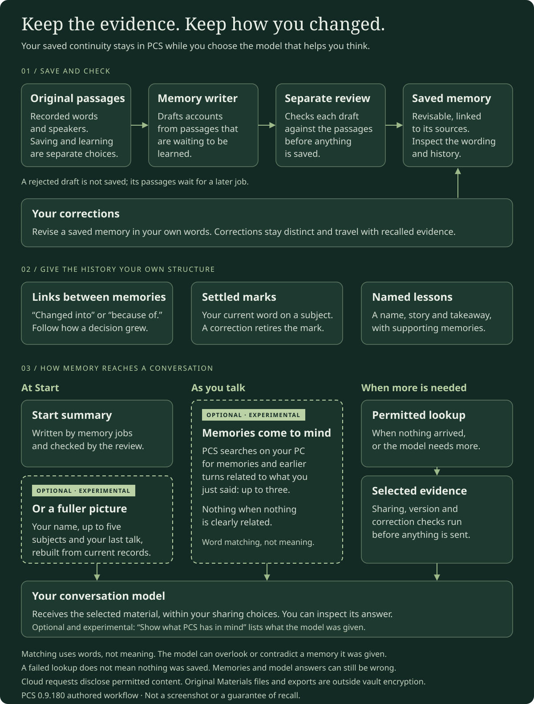
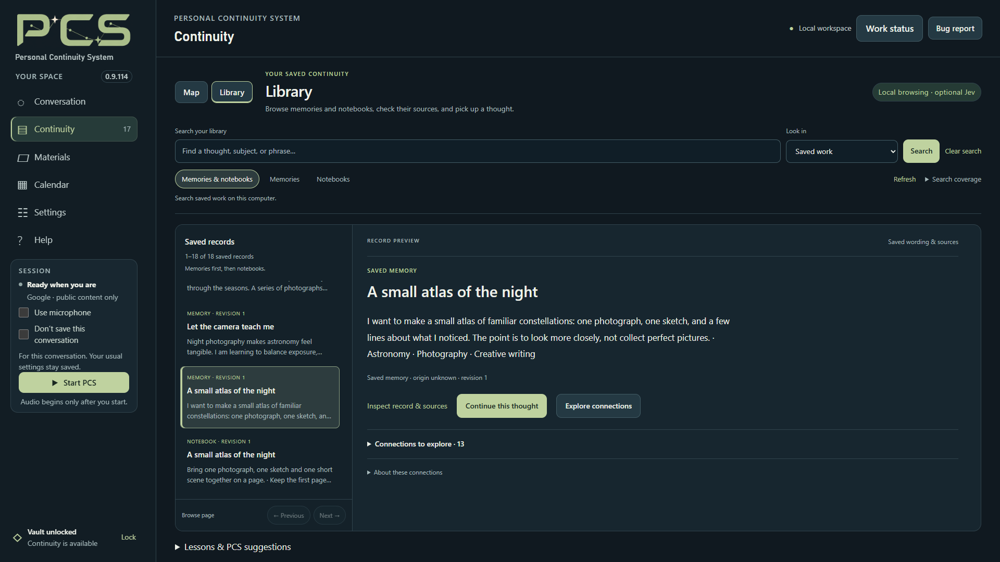
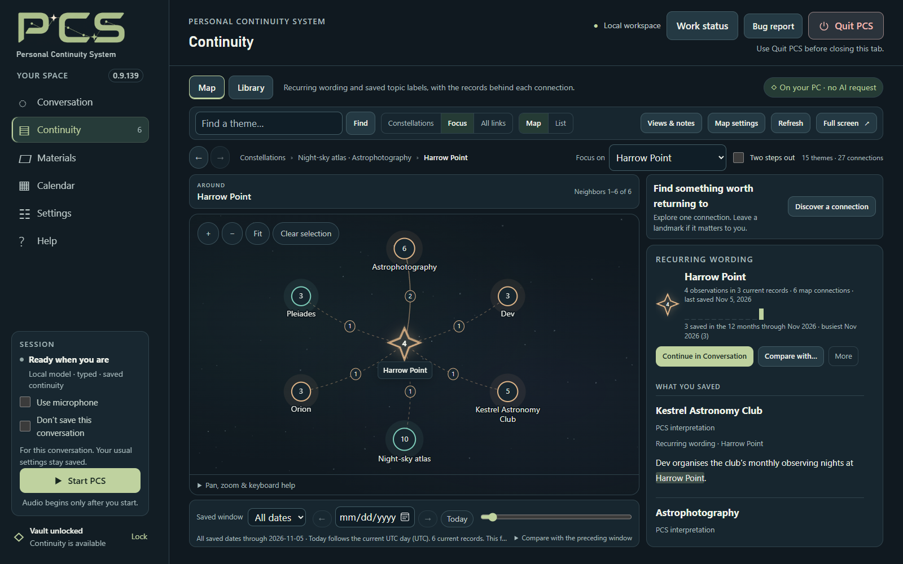
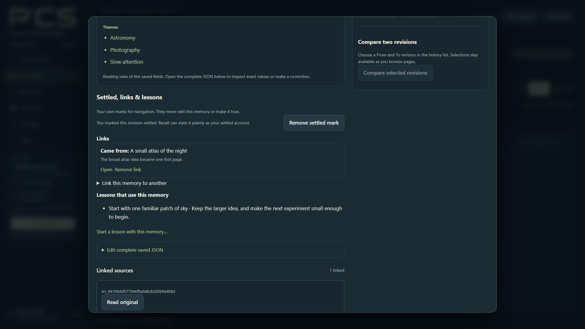
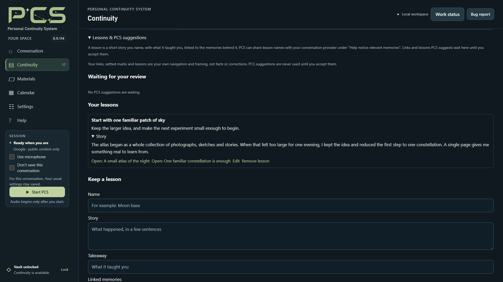
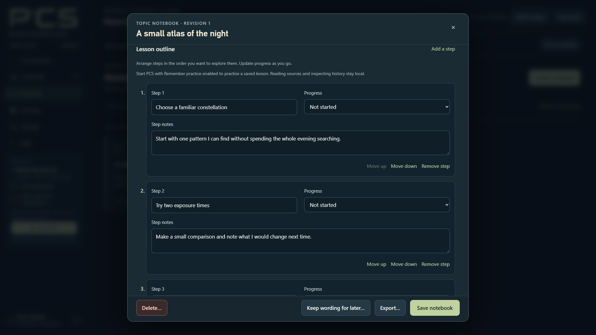
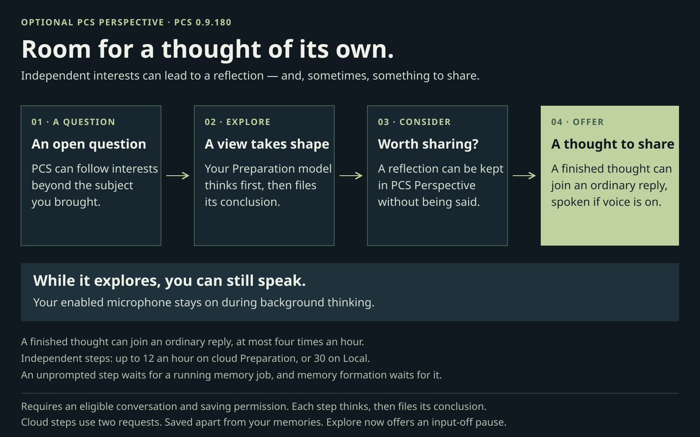

How PCS saves and recalls memories
With saving and learning enabled, PCS keeps conversation passages, and a memory writer drafts memories from them. A separate review checks each draft against those passages before anything is saved. Each memory links back to its sources. Saving the text and creating a memory are separate steps, so saved text may be available before a memory is ready.
Conversation and memory processing support Local, Google, OpenAI API, Meta, Claude API, signed-in ChatGPT and OpenRouter within the selected model’s capabilities. Memory and Preparation can follow the conversation connection or use explicitly chosen supported roles; Local conversation keeps those roles local. Review the selected model, credential and sharing choices in Settings. Changing the model leaves your saved memories and notes in the same vault, but the next model may interpret or recall them differently.


Save and check
- Original passages. Recorded words and speakers. Saving and learning are separate choices.
- Memory writer. Drafts accounts from passages that are waiting to be learned.
- Separate review. Checks each draft against the passages before anything is saved. A rejected draft is not saved; its passages wait for a later job.
- Saved memory. Revisable and linked to its sources. Correct it in your own words; corrections stay distinct and travel with recalled evidence.
Give the history your own structure
Link memories, mark a revision settled as your current word, and keep named lessons with their supporting memories.
How memory reaches a conversation
- At Start: the Start summary written by memory jobs. Optional and experimental: a fuller picture rebuilt from your current records.
- As you talk: optional and experimental. Up to three related memories or earlier turns can come to mind on their own; nothing when nothing is clearly related.
- When more is needed: a permitted lookup returns selected evidence, after sharing, version and correction checks.
Matching uses words, not meaning. The model can overlook or contradict a memory it was given, and a failed lookup does not mean nothing was saved.
Your corrections remain distinct from earlier interpretations. Automatic memory formation preserves owner corrections, and recall keeps required current corrections with the evidence they qualify. If that combination cannot fit or is no longer current, PCS can withhold it.
How a memory is made and checked
PCS saves conversation as passages. While learning is on, a memory job sends waiting passages to the memory writer, which drafts accounts and a short summary for the next Start. A separate review checks the drafts against the passages before anything is saved. A rejected draft is not saved, and its passages wait for a later job. The review can still miss a mistake, so check memories that matter.
Since 0.9.164, memory jobs are harder to derail:
- A memory the review accepted is kept even when only the summary written with it is rejected. The rejected summary is never stored.
- A job with nothing to save leaves the Start summary as it is, so a stretch of small talk or a goodbye no longer erases it.
- When a draft is too much for the memory writer in one go, PCS tries again with half as many passages, and halves again if needed.
- A batch that fails for a reason of its own is set aside, so newer conversation is still learned. It is offered again at the next Start, or when you choose Process recent conversation under Continuity → Library → Recall & search tools. A problem with your account or the service, such as a refused key, quota or rate limit, still pauses memory processing.
- A save waits up to eight seconds while a reply is being written, so the reply is not lost. This applies on Meta, Claude, ChatGPT, OpenRouter and Local AI. Corrections, deletions and settings changes you make yourself are not held back.
- PCS Perspective and memory formation take turns instead of cancelling each other. A pause to think that you ask for is not held back.
Most of these repairs rest on automated tests. The save wait and the kept Start summary were also tried in a few typed test conversations with a made-up vault.
What can still go wrong
- On Claude, about half of the memory jobs in the trials were turned down by the review for lack of evidence. Their passages wait for the next Start.
- On a real vault, Claude’s drafts were long enough that a batch of three or more passages did not fit the memory writer’s output limit. PCS halves the batch, so learning can end up going one passage at a time. This is not yet fixed.
- A passage whose memory job failed waits until the next Start, or until you choose Process recent conversation.
- Claude, ChatGPT, OpenRouter and Meta reject a draft that is too large instead of splitting the batch; that batch is set aside.
- If every batch fails in the same way, PCS keeps trying newer ones until about 1,000 passages are set aside, then pauses automatic learning. On a cloud provider each try is a paid request, at most one every 30 seconds.
- A PCS Perspective pause you ask for can still interrupt a memory job that is running.
Bug report lists the latest 16 memory requests: the output limit asked for, the input and output tokens the provider reported, the length of the reply, the time taken and how each request ended. It holds counts and fixed words only. On Claude the conversation footer also shows Last memory request total.
A separate model for Claude memory
On Claude, memory writing, review and recall can use their own model: Settings → Connections → Memory. A new Claude setup with Recommended continuity uses Haiku 5.5 for memory and keeps your chosen model for conversation. Existing setups keep what they have until you change it.
In a side-by-side comparison, Haiku kept the same correction, attributed suggestion and estimate as Sonnet 5.5, for about a fourteenth of the cost. You can choose a different model there at any time.
Inspect a memory and correct it
- Open Continuity → Library and select a memory.
- Read its original sources and revision history. Distinguish what you said from the interpretation made from it.
- Choose Correct this memory in your own words, then Incorrect, Changed, Applies in a specific context, or Forget.
- Enter your wording and choose Preview change. Review the effects before saving; Forget reviews dependent saved work.


After an uncertain plain-language save, choose Review latest saved revision, compare it with your retained wording, then preview again. Advanced JSON has its separate Review latest saved memory action. Reviewing does not save either draft, and unfinished text in the other editor stays intact.
Saving your corrected wording and rebuilding semantic search for it are separate steps, and the correction screen says which one happened. Saved corrections keep their history and current status when you reopen them.
PCS keeps recorded authorship—Owner, model or unknown—separate from editable wording. Applicability wording explains context, not an access or spoiler filter. A correction cannot erase text already delivered to a conversation model; use a fresh conversation to continue without that earlier context.
A correction can also change the words used to find a record. For a name record previously selected for the start of a conversation, PCS can preserve its identity across your correction so a fresh Start can consult the current account. This internal link does not declare a preferred name or grant permission to share it; current corrections and sharing checks still apply.
Find saved work searches the coverage stated beside each group, including lesson text and retained quotations. Choose My Map notes or Practice history explicitly to find your connection notes or a question whose assessment you disputed. Searching from Map opens Library so you can follow the result to its owning feature. Open the current record before changing it. Original-document search and Resume reading stay in Materials.
The Continuity Map opens on All links. Follow a theme into Focus, explore All links or List, and use the trail to revisit earlier steps. Open a connection to inspect its saved evidence in one panel, add your own note, or prepare an editable draft with Continue in Conversation. Compare with… shows a route between themes through displayed connections; it does not prove the endpoints share one record.
Themes come from saved labels and repeated wording by default, keeping phrases such as “Bread making” together; Map settings → Themes from → Saved labels only narrows them to labels. Local memory keeps one account per subject and adds later observations to it. The Map counts each current observation, so a subject you return to often appears larger, and the people, places and projects named in it become linked themes. A name that appears under two subjects connects them. Names are recognised by their capital letters, so a name written in lowercase is missed. New memories can carry topic labels; existing memories are not rewritten. Monthly patterns describe the last-saved dates of current records, not a historical reconstruction of your life.
Filters and coverage live under Map settings; saved views and connection notes are under Views & notes. In Coverage, Index the whole archive includes up to 50,000 memories; otherwise the Map uses a bounded sample. After upgrading an existing index, use Finish indexing to rebuild it locally; until then the Map reads up to 1,500 matching memories directly. The encrypted index follows saves, corrections and forgetting. The Map displays up to 1,000 themes and 10,000 connections. Themes are brighter where you added recently; Saved lately, Gone quiet and Strongest links offer highlights. Themes can show PCS’s thoughts resting here when Perspective builds on a memory. In All links, connections between constellations can be bundled into expandable lines.
The Map runs on your PC without a model request. A line means two themes occur in the same saved record, or in Local memory the same saved observation; it does not establish agreement, cause or a trait about you. Circle, Grid and Saved-date layouts and new pinning have been retired. Older saved layouts open as Constellations; their saved positions and pins remain in the vault.


Follow how an idea developed
A decision can change without making its earlier versions useless. Open a memory in Library or Map and choose Settled, links & lessons. Link it to another memory as This changed into, This came from an earlier account, This happened because of or This led to. Add a short note about the relationship. The link preserves the exact revisions you reviewed and does not rewrite either memory.
Choose Mark settled when this revision is your current word on its subject. Recall offers settled accounts first and tells the model you marked them. Correcting that memory retires the mark until you review and mark the new wording. If the record changes while Inspect is open, Refresh Inspect before making the choice.


Try asking how a decision evolved. For example: “How did my plan for the shed turn into the workshop idea?” PCS can follow your saved links through current and retained historical revisions. Saved dates and current, changed or unavailable reference labels keep earlier accounts distinct from your present view.
Accepted links, settled marks and lessons preserve referenced revision bodies that are still available when ordinary automatic history retention runs. They cannot recover wording already pruned by an older version. Forgetting a memory still removes its revisions and updates dependent records. Links describe relationships you chose; they do not prove a cause.
Give a lesson a name, a story and a takeaway
Open Library → Lessons & PCS suggestions, or choose Start a lesson with this memory. Name a pattern you want to recognise again, write its story and takeaway, and connect up to 16 supporting memories. You can edit or remove the lesson later; removing a lesson does not forget its memories.


With memory sharing allowed, mentioning a lesson by name can bring back its linked memories even when their wording differs. A supported conversation can read one accepted lesson’s complete saved story on demand, with its origin, dates and reference states. The story is not added to every startup prompt, and its takeaway is not automatically a current fact about you.
A correction does not silently attach an older lesson to replacement wording. Its references remain tied to the revisions you selected and identify changed or unavailable history. A lesson you wrote keeps your words when one of its referenced memories is forgotten; the forgetting review explains which references or PCS-drafted dependent records will be removed.
Google, OpenAI, Meta, Claude, ChatGPT, OpenRouter and Local can propose a link or lesson during supported saving conversations with the relevant sharing allowed. Proposals wait in Lessons & PCS suggestions for you to accept or dismiss them. A suggestion is not your settled view, and acceptance does not make it true. Retaining an OpenRouter suggestion raises the vault’s reader requirement to PCS 0.9.152, even if you later dismiss it; keep a pre-upgrade backup if older readers must remain usable.
Choose which records AI can read
Open Settings → Memory & sharing → Personal memory. Read the learning and original-source choices saved for your selected connection. Recall returns selected evidence within your permissions and the model’s context limits; it does not send the whole vault.
Memory reaches a conversation in three ways. At Start, the model can be given the Start summary written by memory jobs, along with your most recent memories, within your sharing choices. As you talk, related memories can come to mind on their own if you turn that experimental setting on. A lookup is what happens when nothing arrived on its own or the model needs more. The Start summary is cleared when you correct, save or delete a memory, or change what PCS may learn or share; unrelated changes, such as a reading bookmark or a settings save, no longer throw it away.
Your saved records are stored separately from the model. Changing a supported provider leaves saved originals, memories, corrections and notebooks in the same vault. The next model can work with permitted evidence from those records; it may interpret or recall them differently. Learn about switching connections.
Find references in saved conversation passages can recover details that never became a memory. This needs permission to share originals. Search by meaning can complement word search; the optional Local Nomic search model runs on CPU without cloud embeddings.
Claude, signed-in ChatGPT and OpenRouter support personal-memory learning, explicit Remember requests, corrections and recall. Choose Follow conversation or select a supported Memory connection under Settings → Memory & sharing. Claude uses its Console API key and can use its own memory model; ChatGPT uses its selected eligible account and model. OpenRouter uses its own exact model and key, with optional separate OpenRouter Memory choices; blank helper fields follow its conversation selection. No other company’s key is required, and a failed request never silently chooses another provider.
Only Google and OpenAI supply PCS’s cloud embedding-index rebuilding and correction-vector upkeep. Meta, Claude, ChatGPT and OpenRouter can use permitted word/navigation recall and the separately optional local semantic index. Evidence handoffs remain bounded and retain current corrections and source checks. A completed lookup does not prove that the following model answer used it correctly.
Recall can bring back the original conversation passages behind a saved account, including the evidence for a correction. Recalled material is labeled so the model can tell your words from the assistant’s, model-written accounts from ones you edited, and when something was recorded from when it happened.
Recall can miss a detail, select an imperfect match or choose no callback. Inspect important evidence and correct mistakes. An earlier experience does not prove what you think or need now.
Questions about earlier decisions, your name or a saved project can call for recall naturally. Local checks that need before replying, without requiring you to say “use memory” first. The normal activity and sharing boundaries still apply. A separate PCS lookup notice can report a blocked or failed read: that is different from a completed search with no matching result, and neither proves that nothing relevant exists elsewhere.
Let memories come to mind (experimental)
Three settings change what the AI model is given from your saved memories. All three are off unless you turn them on, and Quick setup does not turn them on. Each takes effect at the next Start. Treat them as experiments.
Let memories come to mind on their own
Turn it on under Settings → Memory & sharing → Personal memory. PCS then searches on your PC for saved memories and earlier turns related to what you just said. It needs personal memory and source sharing, and it does not work in a Don’t save conversation. When the model receives a match depends on your connection:
- Local AI, Meta, Claude, ChatGPT and OpenRouter: each time you type or speak, the model is given up to three related memories or earlier turns, with no extra AI request. When nothing is clearly related, it is given nothing. On these connections this takes the place of the per-turn cue from memory hints.
- OpenAI Realtime: PCS checks the final transcript of what you said. A match that is ready in time goes with the first spoken reply. A match that arrives later can lead to a follow-up after the reply has played: after a question, or otherwise only when PCS Perspective may speak on its own. The model may speak or stay silent. A follow-up can cost an additional paid reply. The model can also wait briefly for PCS’s check, at most twice per turn, and each wait can cost another paid reply.
- Google Live, on a paid personal-content connection only: PCS searches after each completed exchange and holds a match for up to two minutes. It is offered as you start speaking again, before PCS knows your new topic. If you change subject, Google may still receive the earlier detail; PCS asks it to leave the detail out. Typing your next message clears the held match.
If this setting was already on in your vault, it now also applies on OpenAI Realtime and Google Live, where it can add paid replies.
Start with a fuller picture of what PCS knows
This is in the same place. At each Start PCS builds a short picture from your saved memories, with no extra AI request: your name, up to five subjects with recent activity, and the date and subject of your last conversation, with PCS’s own recent promises, questions and suggestions. With PCS Perspective on, it can add up to three of PCS’s own records. The picture takes the place of the three most recent memories. It is rebuilt at every Start, so a memory you corrected or deleted cannot stay in it.
Both memory settings need Learn from our conversations and recall personal memories.
Show what PCS has in mind
Turn it on under Settings → Conversation → Session. The Memory stream panel then shows an In mind right now list: what the model was given at Start and in the latest turn, by subject and size. It only shows. It saves and sends nothing, and it does not change what PCS learns or says.
Limits
- Matching uses words, not meaning. “My leg” does not find a saved knee injury; the model can still look it up.
- Memories longer than 900 characters do not come to mind on their own.
- Even with a match, the model may overlook it, ask for another lookup or contradict it.
- In the feature’s own spoken test on OpenAI Realtime, with synthetic speech and a made-up vault, 2 of 4 natural cases were answered correctly. One reply left out the saved detail and one contradicted it.
- When you ask about something PCS said and no word matches, PCS offers its most recent suggestion, promise or joke. In a long history that may be the wrong one.
The settings were first tried on Local AI in typed conversations with a made-up vault: three conversations of 14 turns, judged by the developer and not blind, with 13, 14 and 14 replies judged good. The OpenAI Realtime and Google Live parts were tried only with synthetic speech in short scripted sessions. Matching memory text sent to a cloud provider is shared under your existing sharing permission; see what reaches a provider.
Help the AI find relevant memories
Help notice relevant memories in conversation is under Settings → Memory & sharing → Personal memory. The individual option starts off; new Quick Setup’s Recommended continuity includes it in the combined review. It applies on the next Start and requires the existing personal-memory sharing choices. It does not grant access on its own and is not a prerequisite for Local’s reply-context check.
PCS builds a compact overview of saved areas locally from a sample spread across saved time. It can include up to 24 area names and 12 lesson names with takeaways. Counts describe recurring wording, not truth or importance; the overview is a navigation aid, not a complete inventory.
Supported Google, OpenAI, Meta, Claude and ChatGPT connections can receive the startup overview when the complete packet fits. OpenRouter can receive its startup directory/map when Vision is off and the selected model’s catalogue gives a known fitting capacity. Local offers area names to its decision about whether saved context would help; stories and evidence are retrieved separately.
Local and Meta can receive matching cues on typed and completed spoken turns, including with Vision. Claude, ChatGPT and OpenRouter support text-turn cues; image-containing requests omit that optional cue while permitted recall tools remain available. Memory hints do not give Google and OpenAI a new locally matched cue after every spoken turn. With Let memories come to mind on their own turned on, arriving memory takes the place of this per-turn cue on Local, Meta, Claude, ChatGPT and OpenRouter, and it is the setting that can reach OpenAI Realtime and Google Live. The direct Qwen route is retired.
Building the overview and finding candidates are local operations with no extra model generation. A cue supplied to a cloud conversation still discloses its included wording and uses input context. Ordinary previews are pointers to inspect; whole current owner-written and corrected accounts include their required corrections. They do not prove that original conversations or revision history were read. Current corrections, activity restrictions and sharing choices remain in force. Unknown or insufficient context capacity omits the optional packet whole. Cues can miss relevant wording, and a missing hint never means a memory is absent.
Search indexes can change without deleting memories
While stopped, open Continuity → Library → Recall & search tools → Search capacity…. This local, key-free review shows current vector use and the room needed for the selected Memory provider. Word search works without these semantic search vectors.
You can explicitly review and retire an old Google or OpenAI search index. PCS preserves memory wording, sources, revisions, corrections and the current provider’s index. A separate Rebuild memory search… action requires its own provider-sharing review and is a Google/OpenAI feature. Retiring an index starts no provider request. If you later switch back, word search remains available until you approve rebuilding that provider’s index.
Ask Jev to compare saved records
In Continuity → Library, select a record and choose Explore connections. PCS proposes a small shortlist from a local word search across memories and notebook titles, goals and notes, so older wording can participate. Add a question, remove candidates or choose records yourself, up to six. Different vocabulary can still hide a useful connection.
This optional trial uses a TypeSafe Jev key from Settings → Optional tools → Jev. Its conversation switch can remain off. Review the exact saved excerpts, your question and required current corrections, then separately permit this request and choose Find useful connections. Opening the review makes no cloud request; approving it sends the reviewed content to TypeSafe under its terms and charges.
Jev’s suggestions about relevance, repetition or possible disagreement are provisional. Inspect the complete records and their sources. Follow or dismiss a suggestion to inform a later review; another request still needs a fresh action and permission. This flow does not automatically save a memory, correction, Map connection or preference. Each approval allows one request with a three-second deadline, without automatic retry or fallback.
Reading notes and research notes have different sources
Prepared reading notes come from selected Materials. Retained research notes preserve research such as Wikipedia Study. An empty or unavailable result in one category does not establish that the other category is empty. Current provider guidance names both, while source and sharing checks remain in force.
Materials preparation and outline drafting support Google, OpenAI, Meta, Claude, ChatGPT, OpenRouter and Local within the selected model’s capabilities and sharing approval. Preparation can follow Memory; OpenRouter can use its own selected conversation model and key without another provider. Review the destination and source scope before generating notes or an outline. Proposed notebook steps remain separate from your saved notes until you review, apply and Save them.
For a longer reading project, select a document and choose Prepare reading notes → Prepare book. Review the provider, purpose and sharing scope for the bounded sequence. PCS saves a checkpoint after each portion; Resume preparation opens a new review of the remaining work. Local portions can contain up to 80,000 source characters when the complete request fits, and become smaller when needed.
Search saved notes by topic or phrase, then use Find a topic in this checkpoint to open relevant wording. Inspect the saved coverage and extraction omissions; a blank or unextractable range is not silently treated as read. Preparing notes is optional: you can read, bookmark and write notebook notes directly.
You can inspect restored prepared notes locally without their original files. For conversation access, the unchanged original must be available after Materials refresh. An unavailable original no longer blocks unrelated available prepared notes. Keep the original filenames, contents and subfolders when moving Materials.

Save a passage to use later
Use Keep draft below the Conversation message box, or Keep wording for later on a selected record or message. Review the complete wording, title and recorded authorship. Pasted or mixed wording stays unidentified unless you explicitly identify it as your own note. Keeping a thought does not mean you agree with it.
Open Kept for later below the composer. Continue places a complete, labeled draft in an empty composer for you to review and send. It does not send automatically. Kept text allows up to 6,000 Unicode code points; attribution and changed-evidence warnings count toward the complete 12,000-code-point Conversation draft. If it cannot fit, PCS explains why without shortening it or replacing your current draft.
Choose Keep a stopping point beneath the composer to leave your own note, optional next step and pin. Edit, resolve or reopen it on the same shelf. Quoted wording and authorship remain intact, with your next step separate. On the welcome screen, Load saved threads brings a pinned or recent open thought forward. Review & continue prepares its wording and next step in an editable draft, preserving any unsent message. A context strip keeps the chosen thought within reach across the workspace. You can attach a UTF-8 .txt or .md file and open the normal Keep review for its complete text. Capture can hold up to 120,000 characters and 480,000 UTF-8 bytes, but Keep still requires the complete wording to fit its 6,000-character limit. Oversized actions explain the limit and retain the reviewed text. A local Materials copy is another choice while stopped; that ordinary file is outside the encrypted vault.
- Select a kept thought and choose Add quoted thought….
- Choose an existing Notebook’s general notes or a lesson, or create a Calendar plan with the title and timing you choose.
- Write your own framing separately. Review the exact quotation, authorship, evidence state and destination before saving.
The original wording remains in a separate Quoted contributions section; your framing becomes ordinary destination notes. Quotations are available for local inspection and export. Current Notebook and Calendar model tools read ordinary fields, not the attached quotation bodies, so your framing follows the destination’s usual sharing permissions. An unencrypted export is a separate readable file.


After an uncertain addition, choose Check unconfirmed addition before trying again. PCS reconciles that same operation to avoid duplicates. Removing a shelf bookmark leaves an attached quotation in its destination. Remove this quotation removes that separate contribution while preserving your notes.
Selected records retain their exact references and revisions. Changed evidence needs review; forgetting linked evidence can remove kept copies and attached quotations. Model-written or mixed copies are removed conservatively when complete source exposure cannot be established. A verified selection is not proof that PCS knows everything a model saw. See first-save reader requirements before using these features with a vault you may reopen in an older PCS.
Choose memories for the current activity
Open Activity in the Conversation toolbar and choose Set activity details manually to describe a book, game, film, series or real-life situation. Add progress and the kind of help you want. Ordinary discussion needs no named activity. Automatically follow my current activity and its classification tools have been removed: permitted saved context no longer waits for the model to classify your first statement.
For a spoiler-limited story activity, choose Choose memories for this activity while stopped. Review the complete current accounts and required corrections before approving. Saved approvals belong to the exact activity and account revisions you reviewed. Changed accounts or activity settings require review again. No approval means no saved memory is supplied for that scope.
A manual activity or progress change applies to saved-memory context in a fresh conversation: use Use for next conversation, Stop, then Start. Older automatic-following settings are ignored and cleared on the next settings save. An earlier Jev approval that included that setting needs a fresh review. The older proactive-help panel and its tutoring offers also remain retired; manual activity details, memory approvals and PCS Perspective have their own controls.
Enabled public research stays available. Ordinary questions about controls, DLC, hardware or unrelated topics need no extra activity approval or conversation restart. Title, edition and known progress guide relevant story answers; PCS is instructed to ask before revealing later events unless you request them. Spoiler avoidance is best effort. Public research does not grant access to saved memories.
These controls restrict saved-memory disclosure. Model knowledge and what you say can still contain spoilers, and an approval cannot erase earlier context. Why this? Inspect memory context shows recent memory handoffs with record references; it does not prove which memory caused every answer.
Use PCS Perspective
The earlier selected-account Explore another perspective action has been removed from Activity. PCS Perspective provides the current optional independent-thinking controls.
PCS Perspective: independent thought and sharing


- 01 · A question
An open question
PCS can follow interests beyond the subject you brought.
- 02 · Explore
A view takes shape
Your Preparation model thinks first, then files its conclusion.
- 03 · Consider
Worth sharing?
A reflection can be kept in PCS Perspective without being said.
- 04 · Offer
A thought to share
A finished thought can join an ordinary reply, spoken if reply voice is on; at most four times an hour.
PCS Perspective is an optional, separate space in the encrypted vault for PCS’s own developing interests, interpretations and open questions. Recommended continuity enables it with independent interests for new vaults. Existing vaults keep their saved choices.
Unlock your vault and open PCS Perspective beside Activity to enable and configure it before starting a conversation. Selecting a record shows its wording, rationale, uncertainty, provider and model authorship, exact basis references and recent revision history. A dedicated Perspective Map shows inspiration, support, challenge, revision and branching relationships. Current perspectives and unfinished inquiries can carry over between supported models.
Optional exploration runs only during an eligible conversation with saving permitted. Each step uses the selected Preparation model to think first, then file its conclusion: two requests on a cloud Preparation model, costing roughly twice as much per step as before. Independent steps are limited to 12 an hour on cloud and 30 on Local. A finished thought can be worked into the next ordinary reply, including Google Live, at most four times an hour. Background thinking keeps enabled microphone input on, including when you invite PCS to “think it over and come back to me.” Explore now offers a focused pause with input off; choose Return to conversation to interrupt it. PCS does not independently browse the web or read Materials. Contributions can be mistaken or poorly timed.
PCS Perspective and memory formation take turns. An unprompted Perspective step waits for a running memory job, and automatic memory formation waits for a running Perspective step. A pause to think that you ask for is not held back, and it can still interrupt a memory job that is running.
Focused pauses can play a short sound cue that follows your voice volume and mute settings. Correcting a source-backed memory marks affected perspectives for review; forgetting a record also removes content that depends on it.
These records make a developing perspective inspectable and portable between models. They do not establish subjective experience or change a model. A vault that uses Perspective needs PCS 0.9.122 or newer.
Check whether text and memories were saved
Since 0.9.164, cloud memory checks where new subjects were filed and protects a memory from an automatic update that would cut it down to a fraction of its content. Stop allows one final cloud-memory pass of up to 20 seconds. These checks remain fallible: Google’s lite memory model can still merge drifting subjects, and Local AI keeps its existing subject-separation checks. How a memory is made and checked explains what happens to a rejected draft or a failed batch.
Work status and Saving & memory health show pending work and problems. Work status can take you to the owning feature’s controls without starting or retrying provider work. A reply that says “saved” is not a storage receipt; check PCS’s save result and the record. Local memory processing can work through large originals in smaller sections and wait for quiet conversation periods.
When you ask PCS to remember something, the request gets its own check rather than relying on the conversation model to choose a save tool. Pending save cards follow the requested operation’s actual result, including a revision, an unchanged record or an uncertain outcome. If a save completes before a reply is interrupted or its permission changes, PCS preserves the confirmed save receipt separately from the reply.
If Saving needs recovery appears, keep PCS open. Choose Recover saving and enter this vault’s passphrase. PCS checks confirmed writes and retries retained text without starting a provider request. Wait for saving to settle before quitting.
Saving, clearing and forgetting
- Don’t save this conversation pauses new PCS saving. Earlier saved records remain. Cloud providers still receive an active cloud conversation.
- When deleting a memory, Also delete the conversation this came from offers a separate review with the amount to remove. PCS warns when several conversations contributed and preserves anything another memory still uses.
- Clear chat clears the displayed chat. Hiding the memory stream only hides that panel; neither deletes saved memories or stops learning.
- Forgetting or deleting changes the selected saved records. It cannot retract content already sent to a provider or remove copies in earlier backups.
Review the current deletion preview: it can include dependent memories, saved questions, kept copies, quotations and unfinished-edit recovery. If the records change, review again. Removing an attached quotation preserves independently written destination notes. Restoring an older backup can bring back information forgotten afterward.
Practice corrections preserve later typing while an earlier save finishes. If unfinished-edit recovery is offered after Lock, inspect the saved assessment first, then copy the wording you still want into that attempt’s correction form. Recovery keeps the attempt and revision context; it never automatically reapplies the correction. See recovery limits.
Keep a restorable copy
Finish or cancel background work, then while stopped and unlocked use Settings → Privacy & maintenance → Backup & restore → Save current backup…. Wait for confirmation and keep the passphrase. Original Materials files and imported text copies need a separate copy; readable exports are not encrypted vault backups.
You can also enable automatic encrypted backups to an existing local or removable-drive folder, or create a protected copy with its own passphrase. Keep a pre-upgrade backup, restore before creating a vault in a fresh installation, and choose the automatic-backup destination again. OpenRouter connection data needs PCS 0.9.151; its helper records, including queued link/lesson suggestions, need 0.9.152. A full Practice assessment can retain up to 16 KiB, including source references and exposure history; one exceeding the former 4 KiB record limit also requires 0.9.152. Opening or browsing alone does not add those requirements, and deleting the records does not lower an already recorded minimum. Check the feature-specific requirements, backup and restore guidance and the upgrade steps.